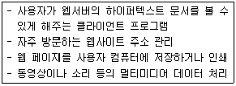
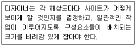
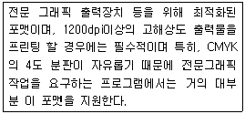
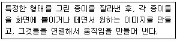
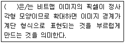
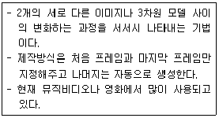

웹디자인기능사 (2014-01-26 기출문제)
1과목: 디자인 일반
1. 제품 디자인 과정 중'완성 예상도' 라고도 하며 실물처럼 충실하고 정확히 표현하는 것을 무엇이라고 하는가?
- 랜더링(RENDERING)
- 드로잉(DRAWING)
- 스케치(SKETCH)
- 목업(MOCK UP)
(정답률: 72%)

2. 디자인 형태로서 조화(harmony)를 이루는 디자인 원리와 거리가 먼 것은?
- 균형
- 대비
- 통일
- 색상
(정답률: 51%)
3. 색채 조화가 잘되도록 배색을 하기 위한 방법으로 틀린 것은?
- 색상의 수를 될 수 있는 대로 줄인다.
- 고채도의 색을 이용하여 색채효과를 높인다.
- 색의 차갑고 따뜻한 느낌을 이용한다.
- 환경의 밝고 어두움을 고려한다.
(정답률: 57%)
4. 다음의 디자인 원리 중 리듬에 해당되지 않는 것은?
- 점이
- 강조
- 균일
- 점증
(정답률: 64%)
5. 해안에 있는 조약돌은 자연의 힘에 의해 필연적으로 만들어진 형태라는 자연의 법칙이 만든 자연의 형태를 주장한 사람은?
- 르 코르뷔지에
- 파파넥
- 아른하임
- 모홀로나기
(정답률: 58%)
6. 먼셀 색체계에 대한 설명으로 틀린 것은?
- 색상을 H, 명도를 V, 채도를 C 라고 한다.
- 표기는 HV/C로 한다.
- 순색의 빨강은 5R4/14로 적는다.
- 혼합하는 색의 양이 많고 적음에 따라 만들어 진다.
(정답률: 66%)
7. 형태에 관한 시각의 기본 법칙을 내포한 게슈탈트(Gustalt) 심리적 원리가 옳은 것은?
- 연속성, 근접성, 유사성, 폐쇄성
- 유사성, 연속성, 개방성, 폐쇄성
- 연속성, 개방성, 전경과 배경의 법칙
- 유사성, 이성적, 개방성, 접근성(근접성)
(정답률: 83%)
8. 입체 디자인의 요소 중 구조 요소로 볼 수 없는 것은?
- 꼭짓점
- 모서리
- 면
- 공간
(정답률: 65%)
9. 다음 중 독창성에 대한 설명으로 가장 옳은 것은?
- 디자인의 기본 요소를 포함시켜 제작하여 배포하는 것을 말한다.
- 세상에 없는 새로운 물건만을 디자인해 창출하는 것을 말한다.
- 기존의 제폼을 그대로 모방, 도용하여 디자인하는 것을 말한다.
- 모든 요소를 유기적으로 관련시켜서 다각적으로 모색, 창출해내는 것을 말한다.
(정답률: 66%)
10. 다음 중 빨간색이 가장 선명하고 뚜렷해 보일 수 있는 배경색으로 적합한 것은?
- 주황
- 노랑
- 회색
- 보라
(정답률: 79%)
11. 색광의 3원색에 대한 설명으로 틀린 것은?
- 색광의 3원색은 빨강(R), 초록(G), 파랑(B)이다.
- 색광의 3원색을 혼합하면 모든 색광을 만들 수 있다.
- 다른 색광을 혼합해서 색광의 3원색을 만들 수 있다.
- 색광은 혼합할수록 명도가 높아진다.
(정답률: 63%)
12. 비례의 종류로 옳게 나열한 것은?
- 상가 수열비와 황금비, 정수비, 등비 수열비
- 황금비 직사각형, 등가 수열비, 등수 수열비
- 황금비, 등차 수열비, 피타고라스 정수비
- 루트 직사각형, 피타고라스 정수비, 등가 수열비
(정답률: 58%)
13. 색의 수축, 팽창의 효과에 가장 큰 영향을 주는 요소는?
- 색약
- 명도
- 잔상
- 중량
(정답률: 79%)
14. 디자인 요소 중 길이와 방향만을 나타내는 것은?
- 점
- 선
- 면
- 입체
(정답률: 93%)
15. 1931년 국제조명위원회에서 색의 단위와 체계를 정립하여 발표한 표색계는?
- 한국 전통 표색계
- 오스트발트 표색계
- CIE 표준 표색계
- KS사용 표색계
(정답률: 68%)
16. 색상이 정반대의 관계인 두 색을 나란히 놓으면, 서로의 영향으로 인하여 각각의 채도가 더 높게 보이는 색의 대비 현상은?
- 보색 대비
- 명도 대비
- 한난 대비
- 계시 대비
(정답률: 79%)
17. 디자인의 형식적 요소에 포함되지 않는 것은?
- 형
- 색
- 질감
- 용도
(정답률: 83%)
18. 1907년 헤르안 무테지우스를 중심으로 뭔헨에서 결성된 디자인 진흥 단체는
- 드 스틸(De Still)
- 독일공작연맹(DWB)
- 바우하우스(BAUHAUS)
- 엠피스(MEMPHIS)
(정답률: 71%)
19. 색의 3속성을 3차원의 공간 속에 계통적으로 배열한 것은?
- 현색계
- 표색계
- 색상환
- 색입체
(정답률: 56%)
20. '최소의 자재와 노력으로 최대의 효과를 거둔다'는 의미의 디자인 조건으로 가장 알맞은 것은?
- 합목적성
- 창의성
- 심미성
- 경제성
(정답률: 83%)
2과목: 인터넷 일반
21. NOSA에서 연구용으로 제작되었고 마우스로 구동되는 그래픽 인터페이스를 처음으로 제공하여 웹 확산에 기여한 웹 브라우저는?
- Opera
- Chrome
- Lynx
- Mosaic
(정답률: 67%)
22. 자바스크립트의 변수로 사용할 수 없는 것은?
- _java
- return
- Hello2
- BasiC
(정답률: 55%)
23. 인터넷 익스플로러 6.0에서 자주 방문하는 웹 사이트의 URL을 등록하는 기능은?
- 검색
- 기록
- 즐겨찾기
- 새로 고침
(정답률: 86%)
24. 다음 중 국내에서 개발한 검색엔진은?
- 라이코스
- 야후
- 심마니
- 아타비스타
(정답률: 68%)
25. 인터넷에서 전자우편(E-mail)을 보낼 때 사용되는 표준 통신 규약은?
- SMTP
- TELNET
- PING
- TRACERT
(정답률: 84%)
26. 다음이 설명하고 있는 것은?

- 웹 브라우저(Web Browser)
- 웹 캐시(Web Cache)
- FTP(File Transfer Protocol)
- 플러그인(Plug-In)
(정답률: 70%)
27. DHTML(Dynamic HTML)의 설명으로 틀린 것은?
- HTML 문서에 있는 객체의 내용을 자유롭게 변경할 수 있다.
- CGI로 처리해야 할 작업들을 각 클라이언트에서 처리 하기 때문에 서버의 부하를 줄일 수 있다.
- 웹 페이지가 로드되면, 클라이언트 쪽에서 이벤트를 발생한 경우에만 서버에서 웹페이지를 다시 로드하므로 서버 로드가 줄어 든다.
- 원하는 정보를 얻기 위해 웹 서버를 찾을 필요가 없게 만들어주는 인터렉티브(interactive)한 페이지이다.
(정답률: 51%)
28. 자바 스크립트의 이벤트에 대한 설명으로 옳은 것은?
- blur : 폼 요소의 입력을 선택 했을 때
- submit : 현재 페이지에서 벗어 날 때
- select : Tab을 이용하여 폼 요소에서 이동 시킬 때
- load : 처음으로 웹 페이지를 읽었을 때
(정답률: 71%)
29. 인터넷 환경에서 파일을 송수신할 때 사용되는 프로토콜로 옳은 것은?
- Telnet
- IRC
- FTP
- Archie
(정답률: 77%)
30. 인터넷의 수많은 정보를 주제별 또는 종류별로 구분한 후 체계적으로 구조화하여 메뉴 형태로 정리해 놓은 것으로, 정보를 효율적으로 접근할 수 있도록 해주는 인터넷 정보 서비스는?
- FTP
- GOPHER
- TELNET
- WHOIS
(정답률: 59%)
31. 다음 중 웹브라우저가 아닌 것은?
- 오페라(Opera)
- 네스케이프 네비게이터(Netscape Navigator)
- 인터넷 익스플로러(Internet Explorer)
- 아파치(Apache)
(정답률: 72%)
32. 웹 검색 엔진에 대한 설명으로 옳지 않은 것은?
- 검색 엔진은 인터넷에서 사용자가 필요한 정보를 찾는 것을 도와주는 서비스이다.
- 검색 엔진에서 동작 방식에 따라 키워드, 주제별, 메타형 검색 엔진이 있다.
- 일반적으로 검색 연산자 AND는 두개의 단어 중 하나라도 포함된 정보를 검색할 때 사용한다.
- 네이버(Naver)는 검색엔진의 일종이다.
(정답률: 80%)
33. 다음 중 종료 태크가 있으나 생략 가능한 것은?
- <BR>
- <DD>
- <HR>
- <IMG>
(정답률: 52%)
34. OSI 7계층 중 최상위 계층은?
- 세션(Session) 계층
- 응용(Application) 계층
- 네트워크(Network) 계층
- 전송(Transport) 계층
(정답률: 67%)
35. 특정 조직의 랜과 외부 네트워크 사이에서 방화벽 역할을 수행하고, 동시에 여러 외부 서버의 데이터를 대신 받아 주는 역할을 하며, 네트워크의 캐시(Cache) 역할도 수행 하는 서버는?
- News Server
- Web Server
- Proxy Server
- Gopher Server
(정답률: 75%)
36. 인터넷 서비스 중 원격의 컴퓨터를 인터넷으로 접속하여 마치 자신의 컴퓨터처럼 사용할 수 있도록 해주는 것은?
- FTP
- TELNET
- WWW
(정답률: 69%)
37. 자바스크립트(JavaScript)에서 현재 활성화된 창을 닫을 때 사용하는 명령어가 아닌 것은?
- screen.close()
- windows.close()
- this.close()
- self.close()
(정답률: 44%)
38. 웹페이지 제작 시 작업환경에서 보이는 그대로 결과물을 도출해 내는 방식은?
- GUI
- Frame
- MCP
- WYSIWYG
(정답률: 54%)
39. HTML 태그 중 줄 바꿈 태그로 옳은 것은?
- <PRE>
- <LI>
- <BR>
- <HR>
(정답률: 79%)
40. HTML에서 다른 페이지로 이동하는 링크 관련 태그로 옳은 것은?
- <IMG>
- <FRAME>
- <TABLE>
- <A href>
(정답률: 77%)
3과목: 웹그래픽스 디자인
41. 다음이 설명하고 있는 것은?

- 웹 기획
- 그리드시스템
- 인터페이스
- 웹 가이드
(정답률: 49%)
42. 컴퓨터그래픽스 시스템의 입력장치에 해당하지 않는 것은?
- 디지타이저
- 스캐너
- 마우스
- 플로터
(정답률: 73%)
43. 벡터이미지방식에 관한 설명 중 틀린 것은?
- 좌표값에 의해서 표현한다.
- 캐릭터를 그리는 작업에 적합하다.
- 깨끗한 이미지를 얻으려면 많은 용량이 요구된다.
- 확대나 축소할 때 이미지의 손상이 없다.
(정답률: 65%)
44. Fractal 이론을 도입하여 산의 표면, 복잡한 해안선, 구름 등 자연계의 복잡한 사물을 사실적으로 시뮬레이션 한 시기는 언제인가?
- 1950년대
- 1960년대
- 1970년대
- 1980년대
(정답률: 49%)
45. 다음 중 웹디자인 프로세스(process)를 순차적으로 옳게 나열한 것은?
- 프로젝트 기획 → 웹 사이트 기획 → 웹사이트 구축 → 유지 및 관리
- 프로젝트 기획 → 웹 사이트 구축 → 웹사이트 기획 → 유지 및 관리
- 웹 사이트 기획 → 웹사이트 구축 → 유지 및 관리 → 프로젝트 기획
- 프로젝트 기획 → 웹 사이트 구축 → 유지 및 관리 → 웹 사이트 기획
(정답률: 86%)
46. 다음 중 해상도의 단위로 맞는 것은?
- CPC
- BPS
- PPM
- PPI
(정답률: 71%)
47. 중요한 장면이 들어가는 프레임이란 의미로 트위닝을 삽입 할 수 있는 것은?
- 플립북
- 키 프레임
- 레이어
- 셀
(정답률: 83%)
48. 다음과 같은 특징을 가지고 있는 파일 포맷의 종류는?

- DRW
- EPS
- XLS
(정답률: 52%)
49. 다음이 설명하고 있는 애니메이션 종류는?

- 컷 아웃 애니메이션
- 스톱모션 애니메이션
- 투광 애니메이션
- 고우모션 애니메이션
(정답률: 80%)
50. 디더링(Dithering)에 대한 설명으로 옳은 것은?
- 제한된 컬러를 사용하여 본래의 높은 비트로 된 컬러의 효과를 최대한으로 내는 처리기법
- 사용자 팔레트를 사용하여 화면에 나타나는 모든 컬러의 종류를 바꾸는 기법
- 2가지 서로 다른 영상이나 3차원 모델 사이를 자연스럽게 결합시키는 처리 기법
- 기존의 비디오나 필름, 혹은 애니메이션 필름 위에 그림을 그리는 처리 기법
(정답률: 59%)
51. 현실이나 상상 속에서 제안되거나 계획된 일련의 사건들의 개략적인 줄거리를 말하며 스토리보드를 작성하는데 토대가 되는 것은?
- 시나리오
- 플로우차트
- 가상현실
- 레이아웃 설정
(정답률: 87%)
52. 기존의 HTML은 웹 문서를 다양하게 설계하고 수시로 변경하는데 많은 제약이 따른다. 이를 보완하기 위해 만들어진 것은?
- CGI
- JAVA
- DHTML
- CSS
(정답률: 42%)
53. 스트리밍방식으로 인터넷 방송에 사용하는 동영상 파일 포맷은?
- *.AVI
- *.MOV
- *.ASF
- *.MPEG
(정답률: 50%)
54. 컴퓨터그래픽스 역사에 대한 설명으로 틀린 것은?
- 1세대 - 진공관 시대
- 2세대 - 트랜지스터 시대
- 3세대 - 스토리지형 CRT 시대
- 4세대 - LED 실용화 시대
(정답률: 59%)
55. 다음 파일 포맷에 대한 설명으로 맞는 것은?
- EPS : GIF와 JPEG 파일 포맷의 장점을 이용한 웹 전용 이미지 파일
- TIFF : 매킨토시 환경에서 사용하는 표준 이미지 파일
- JPEG : GIF 파일 형식보다 다양한 색상 표현
- PNG : 인쇄 전용 파일 포맷
(정답률: 63%)
56. 다음 ( )안에 들어갈 알맞은 용어는?

- 앨리어싱(Aliasing)
- 안티-앨리어싱(Anti-Aliasing)
- 패터(Feather)
- 스타일(Style)
(정답률: 87%)
57. 다음 중 컴퓨터그래픽스에 대한 설명으로 가장 거리가 먼 것은?
- 컴퓨터를 이용한 도형이나. 화상을 작성하는 기술을 말한다.
- 2D, 3D의 의미를 포함하고 있지만 애니메이션은 제외 한다.
- 활용범위는 매우 폭 넓으면 유망한 첨단 분야가 되고 있다.
- 인간의 상상력을 무한히 가능하게 하는 방법 중 하나이다.
(정답률: 81%)
58. 그래픽 파일 형식에서 애니메이션을 지원하는 것은?
- EPS
- GIF
- PSD
- PNG
(정답률: 77%)
59. 사용자가 웹 페이지를 쉽게 이동하고 탐색할 수 있도록 해주는 내비게이션 구조의 요소들에 대한 설명이 틀린 것은?
- 이미지맵 : 웹사이트의 전체구조를 한눈에 알아볼 수 있도록 트리구조 형태로 만든 것으로 지도와 같은 역할을 한다.
- 사이트 메뉴바 : 웹사이트의 좌측이나 우측에 메뉴, 링크 등을 모아둔 것을 말한다.
- 디렉터리 : 주제나 항목을 가테고리 별로 계층적으로 표현하는 방식이다.
- 내비게이션 바 : 메뉴를 한 곳에 모아놓은 그래픽이나 문자열 모음을 말한다.
(정답률: 45%)
60. 다음 설명에 해당하는 애니메이션 종류는?

- 트위닝(Tweening)
- 로토스코핑(Rotoscoping)
- 고러드 쉐이딩(Gouraud Shading)
- 모핑(Mprphing)
(정답률: 50%)